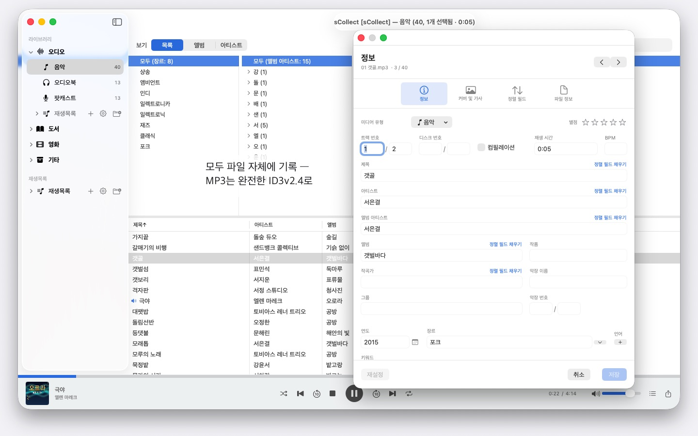
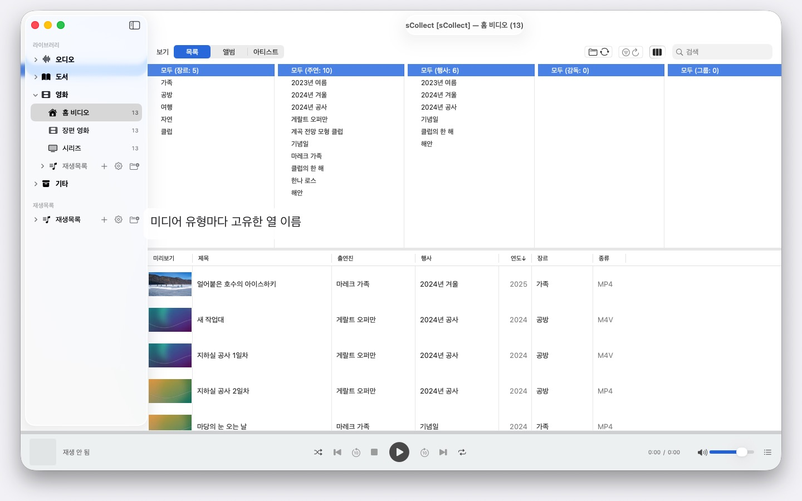

수천 명의 아티스트, 여러 대의 Mac, macOS 14 이상이면 어떤 버전이든. sCollect는 음악, 영화, 책을 정리하고 입력한 정보를 파일 자체에 기록합니다. 계정도 클라우드도 필요 없습니다.


sCollect는 모을 수 있는 모든 것을 위한 라이브러리입니다. 음악, 영화, 홈 비디오, 오디오북, 팟캐스트, 전자책 — 그리고 애초에 미디어 파일이 아닌 것들, 이를테면 동전이나 우표도 사진을 찍고 설명을 붙여 담을 수 있습니다. 카테고리를 어떻게 부를지는 직접 정합니다.
여느 카탈로그와 다른 점은 sCollect가 되돌려 쓴다는 것입니다. 편집기에 입력한 내용은 데이터베이스에만 머무르지 않고 파일 자체의 메타데이터에 기록됩니다. 그래서 언젠가 sCollect를 더 이상 쓰지 않게 되더라도 그때까지의 작업은 그대로 남습니다.
직접 정리하지 않아도 정돈됩니다
가져오기를 할 때 sCollect는 모든 파일을 제자리에 놓습니다. 미디어 유형, 아티스트, 앨범, 날짜 가운데 설정한 기준에 따라서입니다. 미디어 유형마다 각자의 폴더를 가질 수 있고, 다른 하드디스크여도 됩니다. 영화는 용량 큰 외장 디스크에, 음악은 빠른 내장 디스크에.
컬렉션을 있던 자리에 그대로 두고 싶다면 대신 링크하면 됩니다. 링크된 파일에는 결코 손대지 않습니다.
사진과 영상 촬영을 위하여
사진이나 영상을 찍는다면 미디어 유형을 날짜별로 정리하도록 설정합니다. 가져오기를 할 때 파일은 연도와 월 폴더에 들어가고, 파일 이름에는 파일 자체에서 읽은 촬영 일시가 붙습니다. 영상은 카메라가 시간대를 기록하지 않았으면 그 점을 알려 줍니다. IMG_ 같은 카메라 접두사는 원하면 제목에서 사라지고 ISO 날짜가 더해지며, 목록과 디스크의 정렬 순서도 같아집니다.
파일에까지 가닿는 메타데이터
개별 항목을 위한 편집기 하나, 여러 항목을 한꺼번에 다루는 편집기 하나. 둘 다 파일이 본래 지닌 형식으로 씁니다. MP3는 ID3v2.4, MP4와 M4A의 태그 구조, FLAC과 OGG의 Vorbis 주석, AIFF와 WAV의 텍스트 블록, DSD 녹음은 DSF, 이미지는 EXIF와 IPTC와 XMP.
어떤 형식에 그것을 담을 필드가 없거나 파일이 복제 방지되어 있으면, sCollect는 값을 잃는 대신 옆에 사이드카 파일을 놓습니다. 파일이 라이브러리와 다르면, 덮어쓰기 전에 편집기가 알려 줍니다.
작업을 줄여 주는 것들
- 모든 필드에 걸친 찾기/바꾸기
- 카테고리 전체에 걸친 중복 항목 찾기, 어느 쪽이 더 나은지 근거를 밝히는 판정과 함께
- 음악 관리 앱과 같은 열 브라우저, 열마다 여러 개 선택. 수천 명의 아티스트도 끝없는 스크롤 없이: 첫 글자별로 A, AB, ABB로 묶어 세 번 클릭하면 도착
- 소리와 영상 재생, 재생목록과 기억된 재생 위치
없어진 파일을 헤매지 않고 찾아내기
한 번 실행하면 파일이 더 이상 없는 항목마다 표시를 남기고 그 결과를 기억합니다. 전용 보기가 그 항목만 보여 주고, 다시 연결한 것을 하나씩 지워 나갑니다.
여러 대의 Mac, 하나의 컬렉션
라이브러리는 사본을 등록할 수 있습니다. 주 보관본에서 바꾼 내용은 도달할 수 있는 모든 사본으로 나중에 옮겨 갑니다. 파일과 태그까지 함께입니다. 사본이 지금 오프라인이면 변경 사항은 남아 있다가, 그 사본이 다시 나타날 때 따라갑니다.
각 Mac에서 어떤 macOS가 실행되든 상관없습니다. macOS 14의 Mac과 macOS 26의 Mac이 같은 컬렉션을 읽고, 시스템 업데이트가 컬렉션을 변환하지도 않습니다. 다만 사본은 백업이 아닙니다.
가져오기와 내보내기
기존 컬렉션은 iTunes-XML로 들어옵니다. 별점과 재생목록까지 함께입니다. 내보내기는 sCollect-XML로, 이사와 보관을 위한 무손실 형식입니다. 그 밖에 Apple Music용 재생목록으로, 또는 iTunes-XML로도 내보냅니다.
내 Mac 안에서만
계정 없음, 클라우드 없음, 분석 없음, 광고 없음. sCollect는 건네받은 폴더만 다룹니다.
그래서 sCollect는 CD를 가져오지도 않고, 인터넷에서 곡 정보를 받아 오지도 않습니다. 둘 다 Apple Music이 이미 할 수 있는 일입니다. Apple Music에서 CD를 AAC, Apple Lossless 또는 MP3로 가져오면, 파일이 곡 정보를 지닌 채 sCollect로 들어옵니다. 그러니 무엇을 모으고 어떻게 정리하는지 어떤 서비스도 알 수 없습니다.
자유롭게 고를 수 있는 24개 언어로 제공되며, 언어마다 완전한 도움말이 들어 있습니다.
지원 언어: 한국어, 영어, 독일어, 프랑스어, 스페인어, 이탈리아어, 포르투갈어(브라질·포르투갈), 네덜란드어, 스웨덴어, 노르웨이어, 핀란드어, 폴란드어, 체코어, 크로아티아어, 헝가리어, 루마니아어, 튀르키예어, 러시아어, 우크라이나어, 페르시아어, 태국어, 일본어, 중국어(간체), 중국어(번체).
- macOS 14 이상 필요
- 24개 언어 지원
- 지원: SwiftAppsBavaria@gmx.net
다른 앱
SwiftRename
메모리 카드에서 보관함까지 — 사진과 비디오를 촬영 시각에 따라 이름 짓고, 연도·월별로 정리하며, 중복 항목도 찾아냅니다. RAW도 지원.
sName2Date
파일 이름의 날짜를 촬영 일시로 사진, 동영상, 오디오 녹음에 기록합니다 — IMG_20240115_103000.jpg 같은 파일이 어떤 사진 관리 프로그램에서도 올바르게 정렬되도록 합니다. 이미지와 동영상 데이터는 그대로 유지되며, PDF 등 촬영 일시가 없는 파일에는 파일 날짜가 설정되고, 원하면 이름도 ISO 형식으로 바꿉니다. 폴더 트리 전체를 한 번에 처리하며, 모든 작업은 ⌘Z로 되돌릴 수 있습니다.
sName2Date Lite
한 번에 파일 하나를 다루는 버전: 파일 이름의 날짜를 촬영 일시로 사진, 동영상 또는 오디오 녹음에 기록하고, 직접 설정하고, 이름을 ISO 형식으로 바꾸고, 모든 것을 ⌘Z로 되돌립니다 — sName2Date와 같은 기능이지만 폴더 전체는 다루지 않습니다.
sCollectPlay
미디어 라이브러리를 위한 플레이어: 간단히 폴더, iTunes XML 또는 sCollect 미디어 라이브러리에서 음악, 영화, 오디오북, 팟캐스트를 재생합니다 — 이때 파일의 태그는 전혀 변경되지 않습니다. 재생 목록과 오디오 및 자막 트랙을 지원하며, 영화는 슬로 모션과 프레임 단위 이동도 가능합니다. MKV, AVI, DSD처럼 macOS가 직접 재생하지 못하는 형식은 외부 플레이어로 넘깁니다.
sCollectPlay Lite
sCollectPlay의 간결한 버전: 간단히 폴더, iTunes XML 또는 sCollect 미디어 라이브러리를 열어 음악, 영화, 오디오북, 팟캐스트를 재생합니다 — 재생 목록과 오디오 및 자막 트랙, 슬로 모션과 프레임 단위 이동을 지원합니다. 세션당 하나의 소스만 사용할 수 있으며, 열 브라우저, 사용자 재생 목록, 최근 사용한 소스는 정식 버전 전용입니다.
sBikeBridge
포털에 업로드하지 않고 자전거 라이딩을 분석합니다: 이 형식으로 기록하는 모든 사이클 컴퓨터의 FIT 파일과 GPX, TCX를 불러옵니다. 라이딩 기록은 Mac의 자체 라이브러리에 저장됩니다 — 지도, 파워, 심박수, 사진, 메모와 함께; 중복 항목은 가져오기 과정에서 인식됩니다. 연도별·월별 주요 지표와 거리, 상승 고도, 시간 필터로 라이딩을 비교할 수 있습니다. 원하면 지도를 오프라인으로도 사용할 수 있습니다.